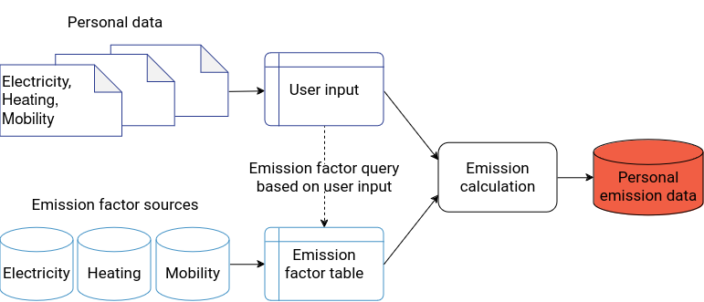

Methodology¶
The co2calculator can compute emissions caused by mobility, heating and electricity consumption. Emissions are given as CO2 equivalents (CO2e).
{kind=link}
1 General information¶
What are CO2e emissions?¶
Anthropogenic climate change is caused by greenhouse gases, such as carbon dioxide (CO2), methane (CH4), nitrous oxides (N2O) and others. The molecules of these gases contribute differently to global warming. For example, the impact of one methane molecule is 21 times higher than the impact caused by one carbon dioxide molecule (Moss et al. 2000). This is why the impact of different greenhouse gases is usually converted to the equivalent impact that carbon dioxide molecules would have, resulting in CO2e equivalents as a standard unit (Gohar & Shine 2007). The basic formula for a consumption value \(c\) and an emission factor \(\epsilon\) is:
Sources¶
CO2e emissions are quantified in kilograms. The unit of consumption values depend on the specific activity. For heating and electricity, the input value is the consumption in kilowatt-hours (kWh), and for mobility, it is the distance travelled in kilometers (km).
Emission factor sources and uncertainties¶
The CO2e emissions are calculated using emission factors from different sources:
Electricity: carbon footprint (2023). International electricity factors.
Mobility: mobitoool (2023). mobitool-Faktoren v3.0
Heating: GOV.UK (2023). Greenhouse gas reporting: conversion factors 2023
The specific emission factors for different activities are collected in this emission factor table.
Several data sources for emission factors are available with differences in their level of detail (e.g. occupancy rates of vehicles, car sizes…), geographic resolution (e.g. national, sub-national…) and up-to-dateness with resulting implications for their within- and across-country comparability. With the selected sources, we aim at providing reliable and user-friendly emission calculations that are comparable across countries, most recent and that come along with acceptable user efforts. When comparisons within countries or more detailed heating emission calculations are required, we suggest to rely on national sources and to provide custom emission factors as district heating can vary significantly across district heating networks within a country. Similarly, while emission factors for most public and private transport are globally comparable, those for electrically powered trams or trains vary significantly across countries. For possible more detailed emission factors, see Geographical coverage.
Compliance with the GHG Protocols¶
The Greenhouse Gas (GHG) Protocol Corporate Standards provide a globally used framework to measure greenhouse gas emissions (Greenhouse Gas Protocol 2024). They account for three scopes:
Scope 1 emissions are direct emissions from sources that are owned or controlled by the reporting entity, such as emissions from combustion in owned vehicles or boilers.
Scope 2 emissions are indirect emissions caused by the generation of purchased or consumed electricity, heating, cooling or steam.
Scope 3 emissions are indirect emissions other than those captured in scope 3. These include all other emissions generated in the life cycle of the product, including production and disposal.
For electricity and mobility, the co2calculator computes emissions based on the whole life cycle of a product, i.e. including scope 3 emissions. For heating, scope 1 emissions are caculated.
Geographical coverage¶
The co2calculator can compute heating and mobility CO2e emissions for the whole globe. For electricity, emissions of production mixes can be calculated for the whole globe and residual mixes for most European countries.
Sub-national electricity emission factors for the USA, Canada and Australia are available on carbon footprint (2023). International electricity factors.. Further sub-national emission factors for the USA are also available on EPA (2023). Detailed emission factors specifically for Germany can be derived from ProBas. Detailed emission factors specifically for France are available on Base Carbone (2023).
Country-specific emission factors for Switzerland, Austria, Germany, France and Italy for eletric trams and trains are provided by mobitoool (2023). mobitool-Faktoren v3.0.
1 Electricity¶
Electricity CO2e emissions can either be calculated from country-specific production mixes or, when available, residual mixes (Carbon Footprint 2023). Production mixes are the mix of fuels used by local power stations and, therefore, the basis for location-based reporting. Residual mixes are electricity mixes after removing energy from specific (e.g. green or renewable) tariffs. These values can thus be used for emission accounting when the user has not bought energy from a specific mix of fuels. Emission factors rely on total or, respectively, residual production fuel mixes, which include scope 2 and scope 3 emissions of the GHG protocol (for details, see Compliance with the GHG Protocols). Alternatively, users can provide specific emission factors, for example, when they use green or renewable tariffs.
Consumption must be provided in kilowatt-hours (kWh). The returned CO2e emissions are quantified in kilograms.
2 Heating¶
Heating CO2e emissions depend on the type of burned fuel. Fuel types may be, for example, oil, gas, coal or biogas. The emissions are calculated using emission factors from (GOV.UK 2023). The provided emission factors reflect scope 1 emissions of the GHG protocol (for details, see Compliance with the GHG Protocols). As we only have values at country level, we note that district heating varies considerably between district heating networks within countries.
Consumption must be provided in kilowatt-hours (kWh). The returned CO2e emissions are quantified in kilograms.
3 Mobility¶
CO2e emissions from the mobility sector are calculated using emission factors from (mobitoool 2023). The emissions include scope 3 emissions of the GHG protocol (for details, see Compliance with the GHG Protocols). For public transport, the emission factors assume certain occupancies. For private transport, an occupancy of one person is assumed. Further details can be found in (Sacchi & Bauer 2023)).
Mobility emissions depend on the mode of transport, such as car or bicycle, and the distance travelled in kilometers (km). This distance may either be directly provided, or it may be computed from given start and stop locations using distances.py. In the latter case, the coordinates of the locations are retrieved using geocoding before the travel distance between the locations is computed (for details, see Geocoding).
Geocoding¶
Geocoding is done using the openrouteservice geocoding service, which is built on top of Pelias, a modular open-source search engine for the world.
To find airports, we use ourairports-data to search by IATA-code. To find train stations inside the EU, we use the train station database of Trainline EU. For train trips outside of the EU and other modes of transport, we use structured geocoding. The structured geocoding parameters are:
country: highest-level administrative division supported in a search. Full country name or two-/three-letter abbreviations supported
e.g., Germany / “DE” / “DEU”
region: first-level administrative divisions within countries, analogous to states and provinces in the US and Canada
e.g., Delaware, Ontario, Ardennes, Baden-Württemberg
county: administrative divisions between localities and regions
e.g., Alb-Donau-Kreis
locality: equivalent to what are commonly referred to as cities (also municipalities)
e.g., Bangkok, Caracas
borough: mostly known in the context of NY, may exist in other cities like Mexico City
e.g. Manhatten in NY, Iztapalapa in Mexico City
postalcode: postal code; note: This may not work for all countries!
e.g., it works for the US and the UK, but not for Germany (and other countries)
address: street name, optionally also house number
neighbourhood: vernacular geographic entities that may not necessarily be official administrative divisions but are important nonetheless
e.g. Notting Hill in London, Le Marais in Paris
Distance computation¶
For cars and motorbikes, distances are computed with openrouteservice with the profile='driving-car'.
For other modes of transport (airplane, ferry, train, bus), the distances between the locations as the crow flies are computed with the haversine formula. Then, different detour coefficients or constants are applied.
With the roundtrip-parameter (type: boolean), users can define if their trip is a roundtrip and if so, the distance will be doubled.
Detour¶
Trips on earth will always make a detour, because it is usually not possible to travel in a straight line from start to destination. Therefore, we use coefficients and constants to account for this detour. These differ depending on the mode of travel.
Mode of transport |
Detour formula |
Source |
|---|---|---|
Bus |
x 1.5 |
Adapted from GES 1point5, who were advised by Frédéric Héran (economist and urban planner). |
Train |
x 1.2 |
Adapted from GES 1point5, who were advised by Frédéric Héran (economist and urban planner). |
Plane |
+ 95 km |
CSN EN 16258 - Methodology for calculation and declaration of energy consumption and GHG emissions of transport services (freight and passengers), European Committee for Standardization, Brussels, November 2012, Méthode pour la réalisation des bilans d’émissions de gaz à effet de , Version 4, p. 53 |
Ferry |
x 1.0 |
Currently no source |
4 Calculation of the carbon budget¶
The carbon budget¶
According to the IPCC (2021),
“[the] term ‘carbon budget’ refers to the maximum amount of cumulative net global anthropogenic $CO_2$ emissions that would result in limiting global warming to a given level with a given probability, taking into account the effect of other anthropogenic climate forcers. This is referred to as the total carbon budget when expressed starting from the pre-industrial period, and as the remaining carbon budget when expressed from a recent specified date […]. The remaining carbon budget indicates how much CO2 could still be emitted while keeping warming below a specific temperature level”.
Calculation of the remaining carbon budget¶
To calculate the remaining carbon budget, we followed an equal-per-capita approach. This means that the remaining global carbon budget is distributed equally among the world’s population. First, we divide the amount of CO2 that could still be emitted worldwide by the world population. For example, to reach the 1.5° goal, 300 billion tons of CO2 could still be emitted. Taking into account that the population of the world is growing, we do not divide the amount of CO2 by the current population of the world, but instead by the mean between the current population and the population projected for 2050. 2050 is when most of the countries plan to be carbon neutral. Finally, we divide the remaining carbon budget per person by the number of years left until carbon neutrality should be reached.
The calculation of the carbon budget is summed up in the following table. Since Germany has pledged to be carbon neutral already by 2045, the remaining time is shorter and therefore the remaining carbon budget per person and year is a bit higher. You can view this remaining carbon budget as the average amount of carbon that could still be emitted per year and person until 2050 (or, respectively for Germany, 2045).
Goal (°C) |
Total carbon budget [t] |
Carbon budget per person (2020-2050) [t] |
Carbon budget per person and year in Germany (2020-2045) [t] |
Carbon budget per person and year (2020-2050) [t] |
|---|---|---|---|---|
1.5 |
3 billion |
34.0 |
1.4 |
1.1 |
2 |
9 billion |
101.9 |
4.1 |
3.4 |